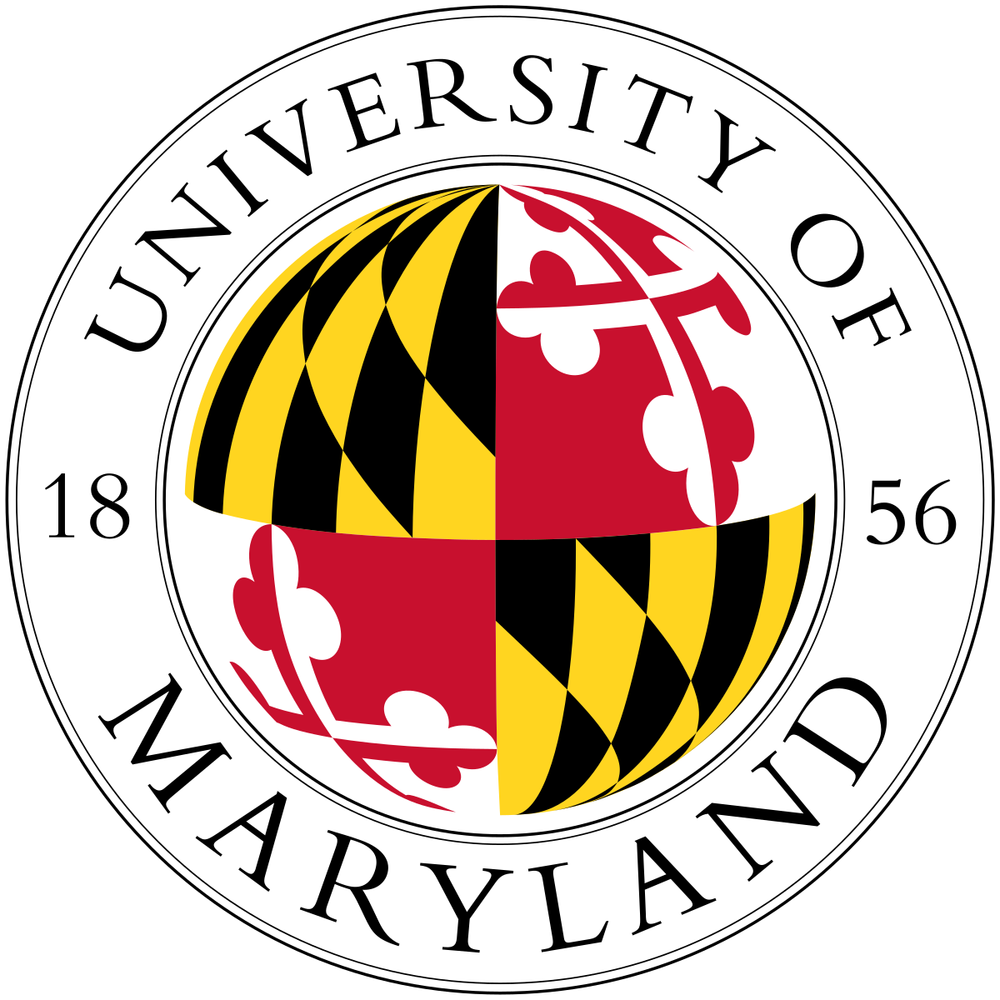

About Me
Education
- University of Maryland,College Park, MD
Master of Engineering in Cybersecurity
CGPA: 3.52, Expected May 2024

- SRM Institute of Science and Technology,Chennai,India
Bachelor of Technology
Computer Science Engineering with
specialization in Cybersecurity
CGPA: 8.68, Jul 2018-May 2022
Summary
I am a passion-driven individual in the field of cybersecurity. I have dedicated my life to staying ahead of the latest trends and techniques in the industry. Currently, I am a University of Maryland, College Park student pursuing a Master's degree in the field of Cybersecurity, and expected to graduate in May 2024. Starting as a student of engineering I have completed a bachelor's degree from SRM Institute of Science and Technology in computer science engineering with a specialization in cybersecurity with an overall GPA of 8.68. As a part of my education, I have also done research and projects in the field of Machine Learning and Natural Language Processing such as my recent project related to text monitoring with NLP for Covid Related Data which gave me a decent understanding of AI and ML. Outside my education, I have hands-on experience in the field of cybersecurity through my internship at TATA Power Delhi Distribution Limited where I received training in web application security, vulnerability assessment, and penetration testing. I have also done industry-relevant certifications such as being a certified ethical hacker from the ec-council and undergoing another certification certified SOC Analyst from the same organization. In addition to my technical skills, which include programming languages such as C, C++, and Python, and tools like Linux, BurpSuite, QRadar, and Splunk, I am also a dedicated volunteer. I have served as a member of the National Cadet Corps and SRM Self-Defense Club, and hold a black belt in Taekwondo. I am eager to bring my skills, experience, and passion to an organization that values hard work and dedication. Please feel free to reach out to me via email at sjain229@umd.edu.